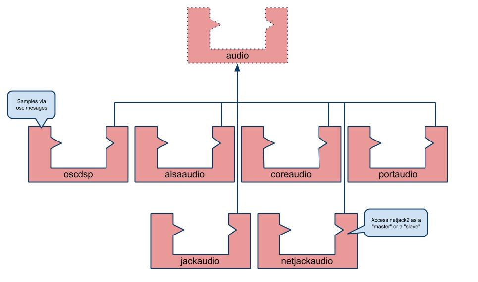
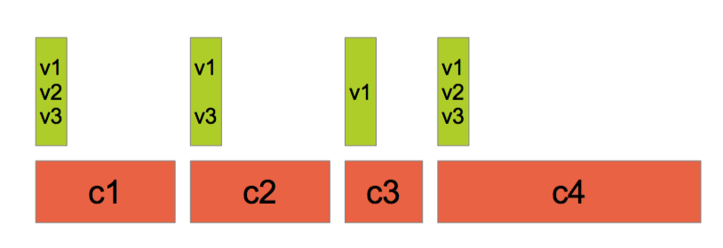
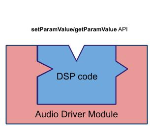

Architecture Files
A Faust program describes a signal processor, a pure DSP computation that maps input signals to output signals. It says nothing about audio drivers or controllers (like GUI, OSC, MIDI, sensors) that are going to control the DSP. This additional information is provided by architecture files.
An architecture file describes how to relate a Faust program to the external world, in particular the audio drivers and the controllers interfaces to be used. This approach allows a single Faust program to be easily deployed to a large variety of audio standards (e.g., Max/MSP externals, PD externals, VST plugins, CoreAudio applications, JACK applications, iPhone/Android, etc.):

The architecture to be used is specified at compile time with the -a option. For example faust -a jack-gtk.cpp foo.dsp indicates to use the JACK GTK architecture when compiling foo.dsp.
Some of these architectures are a modular combination of an audio module and one or more controller modules. Some architecture only combine an audio module with the generated DSP to create an audio engine to be controlled with an additional setParamValue/getParamValue kind of API, so that the controller part can be completeley defined externally. This is the purpose of the faust2api script explained later on.
Minimal Structure of an Architecture File
Before going into the details of the architecture files provided with Faust distribution, it is important to have an idea of the essential parts that compose an architecture file. Technically, an architecture file is any text file with two placeholders <<includeIntrinsic>> and <<includeclass>>. The first placeholder is currently not used, and the second one is replaced by the code generated by the FAUST compiler.
Therefore, the really minimal architecture file, let's call it nullarch.cpp, is the following:
<<includeIntrinsic>>
<<includeclass>>
This nullarch.cpp architecture has the property that faust foo.dsp and faust -a nullarch.cpp foo.dsp produce the same result. Obviously, this is not very useful, moreover the resulting cpp file doesn't compile.
Here is miniarch.cpp, a minimal architecture file that contains enough information to produce a cpp file that can be successfully compiled:
<<includeIntrinsic>>
#define FAUSTFLOAT float
class dsp {};
struct Meta {
virtual void declare(const char* key, const char* value) {};
};
struct Soundfile {};
struct UI {
// -- widget's layouts
virtual void openTabBox(const char* label) {}
virtual void openHorizontalBox(const char* label) {}
virtual void openVerticalBox(const char* label) {}
virtual void closeBox() {}
// -- active widgets
virtual void addButton(const char* label, FAUSTFLOAT* zone) {}
virtual void addCheckButton(const char* label, FAUSTFLOAT* zone) {}
virtual void addVerticalSlider(const char* label, FAUSTFLOAT* zone, FAUSTFLOAT init, FAUSTFLOAT min, FAUSTFLOAT max, FAUSTFLOAT step) {}
virtual void addHorizontalSlider(const char* label, FAUSTFLOAT* zone, FAUSTFLOAT init, FAUSTFLOAT min, FAUSTFLOAT max, FAUSTFLOAT step) {}
virtual void addNumEntry(const char* label, FAUSTFLOAT* zone, FAUSTFLOAT init, FAUSTFLOAT min, FAUSTFLOAT max, FAUSTFLOAT step) {}
// -- passive widgets
virtual void addHorizontalBargraph(const char* label, FAUSTFLOAT* zone, FAUSTFLOAT min, FAUSTFLOAT max) {}
virtual void addVerticalBargraph(const char* label, FAUSTFLOAT* zone, FAUSTFLOAT min, FAUSTFLOAT max) {}
// -- soundfiles
virtual void addSoundfile(const char* label, const char* filename, Soundfile** sf_zone) {}
// -- metadata declarations
virtual void declare(FAUSTFLOAT* zone, const char* key, const char* val) {}
};
<<includeclass>>
This architecture is still not very useful, but it gives an idea of what a real-life architecture file has to implement, in addition to the audio part itself. As we will see in the next section, Faust architectures are implemented using a modular approach to avoid code duplication and favor code maintenance and reuse.
Audio Architecture Modules
A Faust generated program has to connect to a underlying audio layer. Depending if the final program is a application or plugin, the way to connect to this audio layer will differ:
- applications typically use the OS audio driver API, which will be CoreAudio on macOS, ALSA on Linux, WASAPI on Windows for instance, or any kind of multi-platforms API like PortAudio or JACK. In this case a subclass of the base class
audio(see later) has to be written - plugins (like VST3, Audio Unit or JUCE for instance) usually have to follow a more constrained API which imposes a life cyle, something like loading/initializing/starting/running/stopping/unloading sequence of operations. In this case the Faust generated module new/init/compute/delete methods have to be inserted in the plugin API, by calling each module function at the appropriate place.
External and internal audio sample formats
Audio samples are managed by the underlying audio layer, typically as 32 bits float or 64 bits double values in the [-1..1] interval. Their format is defined with the FAUSTFLOAT macro implemented in the architecture file as float by default. The DSP audio samples format is choosen at compile time, with the -single (= default), -double or -quad compilation option. Control parameters like buttons, sliders... also use the FAUSTFLOAT format.
By default, the FAUSTFLOAT macro is written with the following code:
#ifndef FAUSTFLOAT
#define FAUSTFLOAT float
#endif
which gives it a value (if not already defined), and since the default internal format is float, nothing special has to be done in the general case. But when the DSP is compiled using the -double option, the audio inputs/outputs buffers have to be adapted, with a dsp_sample_adapter class, for instance like in the dynamic-jack-gt tool.
Note that an architecture may redefine FAUSTFLOAT in double, and have the complete audio chain running in double. This has to be done before including any architecture file that would define FAUSTFLOAT itself (because of the #ifndef logic).
Connection to an audio driver API
An audio driver architecture typically connects a Faust program to the audio drivers. It is responsible for:
- allocating and releasing the audio channels and presenting the audio as non-interleaved float/double data (depending of the
FAUSTFLOATmacro definition), normalized between -1.0 and 1.0 - calling the DSP
initmethod at init time, to setup thema.SRvariable possibly used in the DSP code - calling the DSP
computemethod to handle incoming audio buffers and/or to produce audio outputs.
The default compilation model uses separated audio input and output buffers not referring to the same memory locations. The -inpl (--in-place) code generation model allows us to generate code working when input and output buffers are the same (which is typically needed in some embedded devices). This option currently only works in scalar (= default) code generation mode.
A Faust audio architecture module derives from an audio class can be defined as below (simplified version, see the real version here):
class audio {
public:
audio() {}
virtual ~audio() {}
/**
* Init the DSP.
* @param name - the DSP name to be given to the audio driven
* (could appear as a JACK client for instance)
* @param dsp - the dsp that will be initialized with the driver sample rate
*
* @return true is sucessful, false if case of driver failure.
**/
virtual bool init(const char* name, dsp* dsp) = 0;
/**
* Start audio processing.
* @return true is sucessfull, false if case of driver failure.
**/
virtual bool start() = 0;
/**
* Stop audio processing.
**/
virtual void stop() = 0;
void setShutdownCallback(shutdown_callback cb, void* arg) = 0;
// Return buffer size in frames.
virtual int getBufferSize() = 0;
// Return the driver sample rate in Hz.
virtual int getSampleRate() = 0;
// Return the driver hardware inputs number.
virtual int getNumInputs() = 0;
// Return the driver hardware outputs number.
virtual int getNumOutputs() = 0;
/**
* @return Returns the average proportion of available CPU
* being spent inside the audio callbacks (between 0.0 and 1.0).
**/
virtual float getCPULoad() = 0;
};
The API is simple enough to give a great flexibility to audio architectures implementations. The init method should initialize the audio. At init exit, the system should be in a safe state to recall the dsp object state. Here is the hierarchy of some of the supported audio drivers:

Connection to a plugin audio API
In the case of plugin, an audio plugin architecture has to be developed, by integrating the Faust DSP new/init/compute/delete methods in the plugin API. Here is a concrete example using the JUCE framework:
-
a FaustPlugInAudioProcessor class, subclass of the
juce::AudioProcessorhas to be defined. The Faust generated C++ instance will be created in its constructor, either in monophonic of polyphonic mode (see later sections) -
the Faust DSP instance is initialized in the JUCE
prepareToPlaymethod using the current sample rate value -
the Faust dsp
computeis called in the JUCEprocesswhich receives the audio inputs/outputs buffers to be processed -
additional methods can possibly be implemented to handle MIDI messages or save/restore the plugin parameters state for instance.
This methodology obviously has to be adapted for each supported plugin API.
MIDI Architecture Modules
A MIDI architecture module typically connects a Faust program to the MIDI drivers. MIDI control connects DSP parameters with MIDI messages (in both directions), and can be used to trigger polyphonic instruments.
MIDI Messages in the DSP Source Code
MIDI control messages are described as metadata in UI elements. They are decoded by a MidiUI class, subclass of UI, which parses incoming MIDI messages and updates the appropriate control parameters, or sends MIDI messages when the UI elements (sliders, buttons...) are moved.
Defined Standard MIDI Messages
A special [midi:xxx yyy...] metadata needs to be added to the UI element. The full description of supported MIDI messages is part of the Faust documentation.
MIDI Classes
A midi base class defining MIDI messages decoding/encoding methods has been developed. It will be used to receive and transmit MIDI messages:
class midi {
public:
midi() {}
virtual ~midi() {}
// Additional time-stamped API for MIDI input
virtual MapUI* keyOn(double, int channel, int pitch, int velocity)
{
return keyOn(channel, pitch, velocity);
}
virtual void keyOff(double, int channel, int pitch, int velocity = 0)
{
keyOff(channel, pitch, velocity);
}
virtual void keyPress(double, int channel, int pitch, int press)
{
keyPress(channel, pitch, press);
}
virtual void chanPress(double date, int channel, int press)
{
chanPress(channel, press);
}
virtual void pitchWheel(double, int channel, int wheel)
{
pitchWheel(channel, wheel);
}
virtual void ctrlChange(double, int channel, int ctrl, int value)
{
ctrlChange(channel, ctrl, value);
}
virtual void ctrlChange14bits(double, int channel, int ctrl, int value)
{
ctrlChange14bits(channel, ctrl, value);
}
virtual void rpn(double, int channel, int ctrl, int value)
{
rpn(channel, ctrl, value);
}
virtual void progChange(double, int channel, int pgm)
{
progChange(channel, pgm);
}
virtual void sysEx(double, std::vector<unsigned char>& message)
{
sysEx(message);
}
// MIDI sync
virtual void startSync(double date) {}
virtual void stopSync(double date) {}
virtual void clock(double date) {}
// Standard MIDI API
virtual MapUI* keyOn(int channel, int pitch, int velocity) { return nullptr; }
virtual void keyOff(int channel, int pitch, int velocity) {}
virtual void keyPress(int channel, int pitch, int press) {}
virtual void chanPress(int channel, int press) {}
virtual void ctrlChange(int channel, int ctrl, int value) {}
virtual void ctrlChange14bits(int channel, int ctrl, int value) {}
virtual void rpn(int channel, int ctrl, int value) {}
virtual void pitchWheel(int channel, int wheel) {}
virtual void progChange(int channel, int pgm) {}
virtual void sysEx(std::vector<unsigned char>& message) {}
enum MidiStatus {
// channel voice messages
MIDI_NOTE_OFF = 0x80,
MIDI_NOTE_ON = 0x90,
MIDI_CONTROL_CHANGE = 0xB0,
MIDI_PROGRAM_CHANGE = 0xC0,
MIDI_PITCH_BEND = 0xE0,
MIDI_AFTERTOUCH = 0xD0, // aka channel pressure
MIDI_POLY_AFTERTOUCH = 0xA0, // aka key pressure
MIDI_CLOCK = 0xF8,
MIDI_START = 0xFA,
MIDI_CONT = 0xFB,
MIDI_STOP = 0xFC,
MIDI_SYSEX_START = 0xF0,
MIDI_SYSEX_STOP = 0xF7
};
enum MidiCtrl {
ALL_NOTES_OFF = 123,
ALL_SOUND_OFF = 120
};
enum MidiNPN {
PITCH_BEND_RANGE = 0
};
};
A pure interface for MIDI handlers that can send/receive MIDI messages to/from midiobjects is defined:
struct midi_interface {
virtual void addMidiIn(midi* midi_dsp) = 0;
virtual void removeMidiIn(midi* midi_dsp) = 0;
virtual ~midi_interface() {}
};
A midi_hander subclass implements actual MIDI decoding and maintains a list of MIDI aware components (classes inheriting from midi and ready to send and/or receive MIDI events) using the addMidiIn/removeMidiIn methods:
class midi_handler : public midi, public midi_interface {
protected:
std::vector<midi*> fMidiInputs;
std::string fName;
MidiNRPN fNRPN;
public:
midi_handler(const std::string& name = "MIDIHandler"):fName(name) {}
virtual ~midi_handler() {}
void addMidiIn(midi* midi_dsp) {...}
void removeMidiIn(midi* midi_dsp) {...}
...
...
};
Several concrete implementations subclassing midi_handler using native APIs have been written and can be found in the faust/midi folder:

Depending on the native MIDI API being used, event time-stamps are either expressed in absolute time or in frames. They are converted to offsets expressed in samples relative to the beginning of the audio buffer.
Connected with the MidiUI class (a subclass of UI), they allow a given DSP to be controlled with incoming MIDI messages or possibly send MIDI messages when its internal control state changes.
In the following piece of code, a MidiUI object is created and connected to a rt_midi MIDI messages handler (using the RTMidi library), then given as a parameter to the standard buildUserInterface to control DSP parameters:
...
rt_midi midi_handler("MIDI");
MidiUI midi_interface(&midi_handler);
DSP->buildUserInterface(&midi_interface);
...
UI Architecture Modules
A UI architecture module links user actions (i.e., via graphic widgets, command line parameters, OSC messages, etc.) with the Faust program to control. It is responsible for associating program parameters to user interface elements and to update parameter’s values according to user actions. This association is triggered by the buildUserInterface call, where the dsp asks a UI object to build the DSP module controllers.
Since the interface is basically graphic-oriented, the main concepts are widget based: an UI architecture module is semantically oriented to handle active widgets, passive widgets and widgets layout.
A Faust UI architecture module derives the UI base class:
template <typename REAL>
struct UIReal {
UIReal() {}
virtual ~UIReal() {}
// -- widget's layouts
virtual void openTabBox(const char* label) = 0;
virtual void openHorizontalBox(const char* label) = 0;
virtual void openVerticalBox(const char* label) = 0;
virtual void closeBox() = 0;
// -- active widgets
virtual void addButton(const char* label, REAL* zone) = 0;
virtual void addCheckButton(const char* label, REAL* zone) = 0;
virtual void addVerticalSlider(const char* label, REAL* zone, REAL init,
REAL min, REAL max, REAL step) = 0;
virtual void addHorizontalSlider(const char* label, REAL* zone, REAL init,
REAL min, REAL max, REAL step) = 0;
virtual void addNumEntry(const char* label, REAL* zone, REAL init,
REAL min, REAL max, REAL step) = 0;
// -- passive widgets
virtual void addHorizontalBargraph(const char* label, REAL* zone, REAL min, REAL max) = 0;
virtual void addVerticalBargraph(const char* label, REAL* zone, REAL min, REAL max) = 0;
// -- soundfiles
virtual void addSoundfile(const char* label, const char* filename, Soundfile** sf_zone) = 0;
// -- metadata declarations
virtual void declare(REAL* zone, const char* key, const char* val) {}
};
struct UI : public UIReal<FAUSTFLOAT>
{
UI() {}
virtual ~UI() {}
};
The FAUSTFLOAT* zone element is the primary connection point between the control interface and the dsp code. The compiled dsp Faust code will give access to all internal control value addresses used by the dsp code by calling the approriate addButton, addVerticalSlider, addNumEntry etc. methods (depending of what is described in the original Faust DSP source code).
The control/UI code keeps those addresses, and will typically change their pointed values each time a control value in the dsp code has to be changed. On the dsp side, all control values are sampled once at the beginning of the compute method, so that to keep the same value during the entire audio buffer.
Writing and reading the control values is typically done in two different threads: the controller (a GUI, an OSC or MIDI.etc. one) write the values, and the audio real-time thread read them in the audio callback. Since writing/reading the FAUSTFLOAT* zone element is atomic, there is no need (in general) of complex synchronization mechanism between the writer (controller) and the reader (the Faust dsp object).
Here is part of the UI classes hierarchy:

Active Widgets
Active widgets are graphical elements controlling a parameter value. They are initialized with the widget name and a pointer to the linked value, using the FAUSTFLOAT macro type (defined at compile time as either float or double). Active widgets in Faust are Button, CheckButton, VerticalSlider, HorizontalSlider and NumEntry.
A GUI architecture must implement a method addXxx(const char* name, FAUSTFLOAT* zone, ...) for each active widget. Additional parameters are available for Slider and NumEntry: the init, min, max and step values.
Passive Widgets
Passive widgets are graphical elements reflecting values. Similarly to active widgets, they are initialized with the widget name and a pointer to the linked value. Passive widgets in Faust are HorizontalBarGraph and VerticalBarGraph.
A UI architecture must implement a method addXxx(const char* name, FAUSTFLOAT* zone, ...) for each passive widget. Additional parameters are available, depending on the passive widget type.
Widgets Layout
Generally, a GUI is hierarchically organized into boxes and/or tab boxes. A UI architecture must support the following methods to setup this hierarchy:
openTabBox(const char* label);
openHorizontalBox(const char* label);
openVerticalBox(const char* label);
closeBox(const char* label);
Note that all the widgets are added to the current box.
Metadata
The Faust language allows widget labels to contain metadata enclosed in square brackets as key/value pairs. These metadata are handled at GUI level by a declare method taking as argument, a pointer to the widget associated zone, the metadata key and value:
declare(FAUSTFLOAT* zone, const char* key, const char* value);
Here is the table of currently supported general medadata:
| Key | Value |
|---|---|
| tooltip | actual string content |
| hidden | 0 or 1 |
| unit | Hz or dB |
| scale | log or exp |
| style | knob or led or numerical |
| style | radio{’label1’:v1;’label2’:v2...} |
| style | menu{’label1’:v1;’label2’:v2...} |
| acc | axe curve amin amid amax |
| gyr | axe curve amin amid amax |
| screencolor | red or green or blue or white |
Here acc means accelerometer and gyr means gyroscope, both use the same parameters (a mapping description) but are linked to different sensors.
Some typical example where several metadata are defined could be:
nentry("freq [unit:Hz][scale:log][acc:0 0 -30 0 30][style:menu{’white noise’:0;’pink noise’:1;’sine’:2}][hidden:0]", 0, 20, 100, 1)
or:
vslider("freq [unit:dB][style:knob][gyr:0 0 -30 0 30]", 0, 20, 100, 1)
When one or several metadata are added in the same item label, then will appear in the generated code as one or successives declare(FAUSTFLOAT* zone, const char* key, const char* value); lines before the line describing the item itself. Thus the UI managing code has to associate them with the proper item. Look at the MetaDataUI class for an example of this technique.
MIDI specific metadata are described here and are decoded the MidiUI class.
Note that medatada are not supported in all architecture files. Some of them like (acc or gyr for example) only make sense on platforms with accelerometers or gyroscopes sensors. The set of medatada may be extended in the future and can possibly be adapted for a specific project. They can be decoded using the MetaDataUIclass.
Graphic-oriented, pure controllers, code generator UI
Even if the UI architecture module is graphic-oriented, a given implementation can perfectly choose to ignore all layout information and only keep the controller ones, like the buttons, sliders, nentries, bargraphs. This is typically what is done in the MidiUI or OSCUI architectures.
Note that pure code generator can also be written. The JSONUI UI architecture is an example of an architecture generating the DSP JSON description as a text file.
DSP JSON Description
The full description of a given compiled DSP can be generated as a JSON file, to be used at several places in the architecture system. This JSON describes the DSP with its inputs/outputs number, some metadata (filename, name, used compilation parameters, used libraries etc.) as well as its UI with a hierarchy of groups up to terminal items (buttons, sliders, nentries, bargraphs) with all their parameters (type, label, shortname, address, meta, init, min, max and step values). For the following DSP program:
import("stdfaust.lib");
vol = hslider("volume [unit:dB]", 0, -96, 0, 0.1) : ba.db2linear : si.smoo;
freq = hslider("freq [unit:Hz]", 600, 20, 2000, 1);
process = vgroup("Oscillator", os.osc(freq) * vol) <: (_,_);
The generated JSON file is then:
{
"name": "foo",
"filename": "foo.dsp",
"version": "2.40.8",
"compile_options": "-lang cpp -es 1 -mcd 16 -single -ftz 0",
"library_list": [],
"include_pathnames": ["/usr/local/share/faust"],
"inputs": 0,
"outputs": 2,
"meta": [
{ "basics.lib/name": "Faust Basic Element Library" },
{ "basics.lib/version": "0.6" },
{ "compile_options": "-lang cpp -es 1 -mcd 16 -single -ftz 0" },
{ "filename": "foo.dsp" },
{ "maths.lib/author": "GRAME" },
{ "maths.lib/copyright": "GRAME" },
{ "maths.lib/license": "LGPL with exception" },
{ "maths.lib/name": "Faust Math Library" },
{ "maths.lib/version": "2.5" },
{ "name": "tes" },
{ "oscillators.lib/name": "Faust Oscillator Library" },
{ "oscillators.lib/version": "0.3" },
{ "platform.lib/name": "Generic Platform Library" },
{ "platform.lib/version": "0.2" },
{ "signals.lib/name": "Faust Signal Routing Library" },
{ "signals.lib/version": "0.1" }
],
"ui": [
{
"type": "vgroup",
"label": "Oscillator",
"items": [
{
"type": "hslider",
"label": "freq",
"shortname": "freq",
"address": "/Oscillator/freq",
"meta": [
{ "unit": "Hz" }
],
"init": 600,
"min": 20,
"max": 2000,
"step": 1
},
{
"type": "hslider",
"label": "volume",
"shortname": "volume",
"address": "/Oscillator/volume",
"meta": [
{ "unit": "dB" }
],
"init": 0,
"min": -96,
"max": 0,
"step": 0.1
}
]
}
]
}
The JSON file can be generated with faust -json foo.dsp command, or programmatically using the JSONUI UI architecture (see next Some Useful UI Classes and Tools for Developers section).
Here is the description of ready-to-use UI classes, followed by classes to be used in developer code:
GUI Builders
Here is the description of the main GUI classes:
- the GTKUI class uses the GTK toolkit to create a Graphical User Interface with a proper group-based layout
- the QTUI class uses the QT toolkit to create a Graphical User Interface with a proper group based layout
- the JuceUI class uses the JUCE framework to create a Graphical User Interface with a proper group based layout
Non-GUI Controllers
Here is the description of the main non-GUI controller classes:
- the OSCUI class implements OSC remote control in both directions
- the httpdUI class implements HTTP remote control using the libmicrohttpd library to embed a HTTP server inside the application. Then by opening a browser on a specific URL, the GUI will appear and allow to control the distant application or plugin. The connection works in both directions
- the MIDIUI class implements MIDI control in both directions, and it explained more deeply later on
Some Useful UI Classes and Tools for Developers
Some useful UI classes and tools can possibly be reused in developer code:
- the MapUI class establishes a mapping beween UI items and their labels, shortname or paths, and offers a
setParamValue/getParamValueAPI to set and get their values. It uses an helper PathBuilder class to create complete shortnames and pathnames to the leaves in the UI hierarchy. Note that the item path encodes the UI hierarchy in the form of a /group1/group2/.../label string and is the way to distinguish control that may have the same label, but different localisation in the UI tree. Using shortnames (built so that they never collide) is an alternative way to access items. ThesetParamValue/getParamValueAPI takes either labels, shortname or paths as the way to describe the control, but using shortnames or paths is the safer way to use it - the extended APIUI offers
setParamValue/getParamValueAPI similar toMapUI, with additional methods to deal with accelerometer/gyroscope kind of metadata - the MetaDataUI class decodes all currently supported metadata and can be used to retrieve their values
- the JSONUI class allows us to generate the JSON description of a given DSP
- the JSONUIDecoder class is used to decode the DSP JSON description and implement its
buildUserInterfaceandmetadatamethods - the FUI class allows us to save and restore the parameters state as a text file
- the SoundUI class with the associated Soundfile class is used to implement the
soundfileprimitive, and load the described audio resources (typically audio files), by using different concrete implementations, either using libsndfile (with the LibsndfileReader.h file), or JUCE (with the JuceReader file). - the ControlSequenceUI class with the associated
OSCSequenceReaderclass allow to control parameters change in time, using the OSC time tag format. Changing the control values will have to be mixed with audio rendering. Look at the sndfile.cpp use-case. - the ValueConverter file contains several mapping classes used to map user interface values (for example a gui slider delivering values between 0 and 1) to Faust values (for example a
vsliderbetween 20 and 2000) using linear/log/exp scales. It also provides classes to handle the[acc:a b c d e]and[gyr:a b c d e]Sensors Control Metadatas.
Multi-Controller and Synchronization
A given DSP can perfectly be controlled by several UI classes at the same time, and they will all read and write the same DSP control memory zones. Here is an example of code using a GUI using GTKUI architecture, as well as OSC control using OSCUI:
...
GTKUI gtk_interface(name, &argc, &argv);
DSP->buildUserInterface(>k_interface);
OSCUI osc_interface(name, argc, argv);
DSP->buildUserInterface(&osc_interface);
...
Since several controller access the same values, you may have to synchronize them, in order for instance to have the GUI sliders or buttons reflect the state that would have been changed by the OSCUI controller at reception time, of have OSC messages been sent each time UI items like sliders or buttons are moved.
This synchronization mecanism is implemented in a generic way in the GUI class. First theuiItemBase class is defined as the basic synchronizable memory zone, then grouped in a list controlling the same zone from different GUI instances. The uiItemBase::modifyZone method is used to change the uiItemBase state at reception time, and uiItemBase::reflectZonewill be called to reflect a new value, and can change the Widget layout for instance, or send a message (OSC, MIDI...).
All classes needing to use this synchronization mechanism will have to subclass the GUI class, which keeps all of them at runtime in a global GUI::fGuiList variable. This is the case for the previously used GTKUI and OSCUI classes. Note that when using the GUI class, some global variables have to be defined in the code, like in the following example:
// Globals
std::list<GUI*> GUI::fGuiList;
ztimedmap GUI::gTimedZoneMap;
Finally the static GUI::updateAllGuis() synchronization method will have to be called regularly, in the application or plugin event management loop, or in a periodic timer for instance. This is typically implemented in the GUI::run method which has to be called to start event or messages processing.
In the following code, the OSCUI::run method is called first to start processing OSC messages, then the blocking GTKUI::run method, which opens the GUI window, to be closed to finally finish the application:
...
// Start OSC messages processing
osc_interface.run();
// Start GTK GUI as the last one, since it blocks until the opened window is closed
gtk_interface.run()
...
DSP Architecture Modules
The Faust compiler produces a DSP module whose format will depend of the chosen backend: a C++ class with the -lang cpp option, a data structure with associated functions with the -lang c option, an LLVM IR module with the -lang llvm option, a WebAssembly binary module with the -lang wasm option, a bytecode stream with the -lang interp option... and so on.
The Base dsp Class
In C++, the generated class derives from a base dsp class:
class dsp {
public:
dsp() {}
virtual ~dsp() {}
/* Return instance number of audio inputs */
virtual int getNumInputs() = 0;
/* Return instance number of audio outputs */
virtual int getNumOutputs() = 0;
/**
* Trigger the ui_interface parameter with instance specific calls
* to 'openTabBox', 'addButton', 'addVerticalSlider'... in order to build the UI.
*
* @param ui_interface - the user interface builder
*/
virtual void buildUserInterface(UI* ui_interface) = 0;
/* Return the sample rate currently used by the instance */
virtual int getSampleRate() = 0;
/**
* Global init, calls the following methods:
* - static class 'classInit': static tables initialization
* - 'instanceInit': constants and instance state initialization
*
* @param sample_rate - the sampling rate in Hz
*/
virtual void init(int sample_rate) = 0;
/**
* Init instance state
*
* @param sample_rate - the sampling rate in Hz
*/
virtual void instanceInit(int sample_rate) = 0;
/**
* Init instance constant state
*
* @param sample_rate - the sampling rate in HZ
*/
virtual void instanceConstants(int sample_rate) = 0;
/* Init default control parameters values */
virtual void instanceResetUserInterface() = 0;
/* Init instance state (like delay lines..) but keep the control parameter values */
virtual void instanceClear() = 0;
/**
* Return a clone of the instance.
*
* @return a copy of the instance on success, otherwise a null pointer.
*/
virtual dsp* clone() = 0;
/**
* Trigger the Meta* parameter with instance specific calls to 'declare'
* (key, value) metadata.
*
* @param m - the Meta* meta user
*/
virtual void metadata(Meta* m) = 0;
/**
* DSP instance computation, to be called with successive in/out audio buffers.
*
* @param count - the number of frames to compute
* @param inputs - the input audio buffers as an array of non-interleaved
* FAUSTFLOAT samples (eiher float, double or quad)
* @param outputs - the output audio buffers as an array of non-interleaved
* FAUSTFLOAT samples (eiher float, double or quad)
*
*/
virtual void compute(int count, FAUSTFLOAT** inputs, FAUSTFLOAT** outputs) = 0;
/**
* DSP instance computation: alternative method to be used by subclasses.
*
* @param date_usec - the timestamp in microsec given by audio driver.
* @param count - the number of frames to compute
* @param inputs - the input audio buffers as an array of non-interleaved
* FAUSTFLOAT samples (either float, double or quad)
* @param outputs - the output audio buffers as an array of non-interleaved
* FAUSTFLOAT samples (either float, double or quad)
*
*/
virtual void compute(double date_usec, int count,
FAUSTFLOAT** inputs,
FAUSTFLOAT** outputs) = 0;
};
The dsp class is central to the Faust architecture design:
- the
getNumInputs,getNumOutputsmethods provides information about the signal processor - the
buildUserInterfacemethod creates the user interface using a given UI class object (see later) - the
initmethod (and some more specialized methods likeinstanceInit,instanceConstants, etc.) is called to initialize the dsp object with a given sampling rate, typically obtained from the audio architecture - the
computemethod is called by the audio architecture to execute the actual audio processing. It takes acountnumber of samples to process, andinputsandoutputsarrays of non-interleaved float/double samples, to be allocated and handled by the audio driver with the required dsp input and outputs channels (as given bygetNumInputsandgetNumOutputs) - the
clonemethod can be used to duplicate the instance - the
metadata(Meta* m)method can be called with aMetaobject to decode the instance global metadata (see next section)
(note that FAUSTFLOAT label is typically defined to be the actual type of sample: either float or double using #define FAUSTFLOAT float in the code for instance).
For a given compiled DSP program, the compiler will generate a mydsp subclass of dsp and fill the different methods (the actual name can be changed using the -cn option). For dynamic code producing backends like the LLVM IR, Cmajor or the Interpreter ones, the actual code (an LLVM module, a Cmajor module or a bytecode stream) is actually wrapped by some additional C++ code glue, to finally produces a llvm_dsp typed object (defined in the llvm-dsp.h file), a soulpatch_dsp typed object (defined in the soulpatch-dsp.h file) or an interpreter_dsp typed object (defined in interpreter-dsp.h file), ready to be used with the UI and audio C++ classes (like the C++ generated class). See the following class diagram:

Global DSP metadata
All global metadata declaration in Faust start with declare, followed by a key and a string. For example:
declare name "Noise";
allows us to specify the name of a Faust program in its whole.
Unlike regular comments, metadata declarations will appear in the C++ code generated by the Faust compiler, for instance the Faust program:
declare name "NoiseProgram";
declare author "MySelf";
declare copyright "MyCompany";
declare version "1.00";
declare license "BSD";
import("stdfaust.lib");
process = no.noise;
will generate the following C++ metadata(Meta* m) method in the dsp class:
void metadata(Meta* m)
{
m->declare("author", "MySelf");
m->declare("compile_options", "-lang cpp -es 1 -scal -ftz 0");
m->declare("copyright", "MyCompany");
m->declare("filename", "metadata.dsp");
m->declare("license", "BSD");
m->declare("name", "NoiseProgram");
m->declare("noises.lib/name", "Faust Noise Generator Library");
m->declare("noises.lib/version", "0.0");
m->declare("version", "1.00");
}
which interacts with an instance of an implementation class of the following virtual Meta class:
struct Meta
{
virtual ~Meta() {};
virtual void declare(const char* key, const char* value) = 0;
};
and are part of three different types of global metadata:
- metadata like
compile_optionsorfilenameare automatically generated - metadata like
authorofcopyrightare part of the Global Medata - metadata like
noises.lib/nameare part of the Function Metadata
Specialized subclasses of theMeta class can be implemented to decode the needed key/value pairs for a given use-case.
Macro Construction of DSP Components
The Faust program specification is usually entirely done in the language itself. But in some specific cases it may be useful to develop separated DSP components and combine them in a more complex setup.
Since taking advantage of the huge number of already available UI and audio architecture files is important, keeping the same dsp API is preferable, so that more complex DSP can be controlled and audio rendered the usual way. Extended DSP classes will typically subclass the dsp base class and override or complete part of its API.
Dsp Decorator Pattern
A dsp_decorator class, subclass of the root dsp class has first been defined. Following the decorator design pattern, it allows behavior to be added to an individual object, either statically or dynamically.
As an example of the decorator pattern, the timed_dsp class allows to decorate a given DSP with sample accurate control capability or the mydsp_poly class for polyphonic DSPs, explained in the next sections.
Combining DSP Components
A few additional macro construction classes, subclasses of the root dsp class have been defined in the dsp-combiner.h header file with a five operators construction API:
- the
dsp_sequencerclass combines two DSP in sequence, assuming that the number of outputs of the first DSP equals the number of input of the second one. It somewhat mimics the sequence (that is:) operator of the language by combining two separated C++ objects. ItsbuildUserInterfacemethod is overloaded to group the two DSP in a tabgroup, so that control parameters of both DSPs can be individually controlled. Itscomputemethod is overloaded to call each DSPcomputein sequence, using an intermediate output buffer produced by first DSP as the input one given to the second DSP. - the
dsp_parallelizerclass combines two DSP in parallel. It somewhat mimics the parallel (that is,) operator of the language by combining two separated C++ objects. ItsgetNumInputs/getNumOutputsmethods are overloaded by correctly reflecting the input/output of the resulting DSP as the sum of the two combined ones. ItsbuildUserInterfacemethod is overloaded to group the two DSP in a tabgroup, so that control parameters of both DSP can be individually controlled. Itscomputemethod is overloaded to call each DSP compute, where each DSP consuming and producing its own number of input/output audio buffers taken from the method parameters.
This methology is followed to implement the three remaining composition operators (split, merge, recursion), which ends up with a C++ API to combine DSPs with the usual five operators: createDSPSequencer, createDSPParallelizer, createDSPSplitter, createDSPMerger, createDSPRecursiver to be used at C++ level to dynamically combine DSPs.
Note that this idea of decorating or combining several C++ dsp objects can perfectly be extended in specific projects, to meet other needs: like muting some part of a graph of several DSPs for instance. But keep in mind that keeping the dsp API then allows to take profit of all already available UI and audio based classes.
Sample Accurate Control
DSP audio languages usually deal with several timing dimensions when treating control events and generating audio samples. For performance reasons, systems maintain separated audio rate for samples generation and control rate for asynchronous messages handling.
The audio stream is most often computed by blocks, and control is updated between blocks. To smooth control parameter changes, some languages chose to interpolate parameter values between blocks.
In some cases control may be more finely interleaved with audio rendering, and some languages simply choose to interleave control and sample computation at sample level.
Although the Faust language permits the description of sample level algorithms (i.e., like recursive filters, etc.), Faust generated DSP are usually computed by blocks. Underlying audio architectures give a fixed size buffer over and over to the DSP compute method which consumes and produces audio samples.
Control to DSP Link
In the current version of the Faust generated code, the primary connection point between the control interface and the DSP code is simply a memory zone. For control inputs, the architecture layer continuously write values in this zone, which is then sampled by the DSP code at the beginning of the compute method, and used with the same values throughout the call. Because of this simple control/DSP connexion mechanism, the most recent value is used by the DSP code.
Similarly for control outputs , the DSP code inside the compute method possibly writes several values at the same memory zone, and the last value only will be seen by the control architecture layer when the method finishes.
Although this behaviour is satisfactory for most use-cases, some specific usages need to handle the complete stream of control values with sample accurate timing. For instance keeping all control messages and handling them at their exact position in time is critical for proper MIDI clock synchronisation.
Time-Stamped Control
The first step consists in extending the architecture control mechanism to deal with time-stamped control events. Note that this requires the underlying event control layer to support this capability. The native MIDI API for instance is usually able to deliver time-stamped MIDI messages.
The next step is to keep all time-stamped events in a time ordered data structure to be continuously written by the control side, and read by the audio side.
Finally the sample computation has to take account of all queued control events, and correctly change the DSP control state at successive points in time.
Slices Based DSP Computation
With time-stamped control messages, changing control values at precise sample indexes on the audio stream becomes possible. A generic slices based DSP rendering strategy has been implemented in the timed_dsp class.
A ring-buffer is used to transmit the stream of time-stamped events from the control layer to the DSP one. In the case of MIDI control for instance, the ring-buffer is written with a pair containing the time-stamp expressed in samples and the actual MIDI message each time one is received. In the DSP compute method, the ring-buffer will be read to handle all messages received during the previous audio block.
Since control values can change several times inside the same audio block, the DSP compute cannot be called only once with the total number of frames and the complete inputs/outputs audio buffers. The following strategy has to be used:
- several slices are defined with control values changing between consecutive slices
- all control values having the same time-stamp are handled together, and change the DSP control internal state. The slice is computed up to the next control parameters time-stamp until the end of the given audio block is reached
- in the next figure, four slices with the sequence of c1, c2, c3, c4 frames are successively given to the DSP compute method, with the appropriate part of the audio input/output buffers. Control values (appearing here as [v1,v2,v3], then [v1,v3], then [v1], then [v1,v2,v3] sets) are changed between slices

Since time-stamped control messages from the previous audio block are used in the current block, control messages are aways handled with one audio buffer latency.
Note that this slices based computation model can always be directly implemented on top of the underlying audio layer, without relying on the timed_dsp wrapper class.
Typical Use-Case
A typical Faust program can use the MIDI clock command signal to possibly compute the Beat Per Minutes (BPM) information for any synchronization need it may have.
Here is a simple example of a sinusoid generated which a frequency controlled by the MIDI clock stream, and starting/stopping when receiving the MIDI start/stop messages:
import("stdfaust.lib");
// square signal (1/0), changing state
// at each received clock
clocker = checkbox("MIDI clock[midi:clock]");
// ON/OFF button controlled
// with MIDI start/stop messages
play = checkbox("On/Off [midi:start][midi:stop]");
// detect front
front(x) = (x-x’) != 0.0;
// count number of peaks during one second
freq(x) = (x-x@ma.SR) : + ~ _;
process = os.osc(8*freq(front(clocker))) * play;
Each received group of 24 clocks will move the time position by exactly one beat. Then it is absolutely mandatory to never loose any MIDI clock message and the standard memory zone based model with the use the last received control value semantic is not adapted.
The DSP object that needs to be controlled using the sample-accurate machinery can then simply be decorated using thetimed_dsp class with the following kind of code:
dsp* sample_accurate_dsp = new timed_dsp(DSP);
Note that the described sample accurate MIDI clock synchronization model can currently only be used at input level. Because of the simple memory zone based connection point between the control interface and the DSP code, output controls (like bargraph) cannot generate a stream of control values. Thus a reliable MIDI clock generator cannot be implemented with the current approach.
Polyphonic Instruments
Directly programing polyphonic instruments in Faust is perfectly possible. It is also needed if very complex signal interaction between the different voices have to be described.
But since all voices would always be computed, this approach could be too CPU costly for simpler or more limited needs. In this case describing a single voice in a Faust DSP program and externally combining several of them with a special polyphonic instrument aware architecture file is a better solution. Moreover, this special architecture file takes care of dynamic voice allocations and control MIDI messages decoding and mapping.
Polyphonic ready DSP Code
By convention Faust architecture files with polyphonic capabilities expect to find control parameters named freq, gain, and gate. The metadata declare nvoices "8"; kind of line with a desired value of voices can be added in the source code.
In the case of MIDI control, the freq parameter (which should be a frequency) will be automatically computed from MIDI note numbers, gain (which should be a value between 0 and 1) from velocity and gate from keyon/keyoff events. Thus, gate can be used as a trigger signal for any envelope generator, etc.
Using the mydsp_poly Class
The single voice has to be described by a Faust DSP program, the mydsp_poly class is then used to combine several voices and create a polyphonic ready DSP:
- the poly-dsp.h file contains the definition of the
mydsp_polyclass used to wrap the DSP voice into the polyphonic architecture. This class maintains an array ofdsp*objects, manage dynamic voice allocation, control MIDI messages decoding and mapping, mixing of all running voices, and stopping a voice when its output level decreases below a given threshold - as a subclass of DSP, the
mydsp_polyclass redefines thebuildUserInterfacemethod. By convention all allocated voices are grouped in a global Polyphonic tabgroup. The first tab contains a Voices group, a master like component used to change parameters on all voices at the same time, with a Panic button to be used to stop running voices, followed by one tab for each voice. Graphical User Interface components will then reflect the multi-voices structure of the new polyphonic DSP

The resulting polyphonic DSP object can be used as usual, connected with the needed audio driver, and possibly other UI control objects like OSCUI, httpdUI, etc. Having this new UI hierarchical view allows complete OSC control of each single voice and their control parameters, but also all voices using the master component.
The following OSC messages reflect the same DSP code either compiled normally, or in polyphonic mode (only part of the OSC hierarchies are displayed here):
// Mono mode
/Organ/vol f -10.0
/Organ/pan f 0.0
// Polyphonic mode
/Polyphonic/Voices/Organ/pan f 0.0
/Polyphonic/Voices/Organ/vol f -10.0
...
/Polyphonic/Voice1/Organ/vol f -10.0
/Polyphonic/Voice1/Organ/pan f 0.0
...
/Polyphonic/Voice2/Organ/vol f -10.0
/Polyphonic/Voice2/Organ/pan f 0.0
Note that to save space on the screen, the/Polyphonic/VoiceX/xxx syntax is used when the number of allocated voices is less than 8, then the/Polyphonic/VX/xxx syntax is used when more voices are used.
The polyphonic instrument allocation takes the DSP to be used for one voice, the desired number of voices, the dynamic voice allocation state, and the group state which controls if separated voices are displayed or not:
dsp* poly = new mydsp_poly(dsp, 2, true, true);
With the following code, note that a polyphonic instrument may be used outside of a MIDI control context, so that all voices will be always running and possibly controlled with OSC messages for instance:
dsp* poly = new mydsp_poly(dsp, 8, false, true);
Polyphonic Instrument With a Global Output Effect
Polyphonic instruments may be used with an output effect. Putting that effect in the main Faust code is generally not a good idea since it would be instantiated for each voice which would be very inefficient.
A convention has been defined to use the effect = some effect; line in the DSP source code. The actual effect definition has to be extracted from the DSP code, compiled separately, and then combined using the dsp_sequencer class previously presented to connect the polyphonic DSP in sequence with a unique global effect, with something like:
dsp* poly = new dsp_sequencer(new mydsp_poly(dsp, 2, true, true), new effect());
 |
| 
Some helper classes like the base dsp_poly_factory class, and concrete implementations llvm_dsp_poly_factory when using the LLVM backend or interpreter_dsp_poly_factory when using the Interpreter backend can also be used to automatically handle the voice and effect part of the DSP.
Controlling the Polyphonic Instrument
The mydsp_poly class is also ready for MIDI control (as a class implementing the midi interface) and can react to keyOn/keyOff and pitchWheel events. Other MIDI control parameters can directly be added in the DSP source code as MIDI metadata. To receive MIDI events, the created polyphonic DSP will be automatically added to the midi_handler object when calling buildUserInterface on a MidiUI object.
Deploying the Polyphonic Instrument
Several architecture files and associated scripts have been updated to handle polyphonic instruments:
As an example on OSX, the script faust2caqt foo.dsp can be used to create a polyphonic CoreAudio/QT application. The desired number of voices is either declared in a nvoices metadata or changed with the -nvoices num additional parameter. MIDI control is activated using the -midi parameter.
The number of allocated voices can possibly be changed at runtime using the-nvoices parameter to change the default value (so using ./foo -nvoices 16 for instance). Several other scripts have been adapted using the same conventions.
faustcaqt -midi -noices 12 inst.dsp -effect effect.dsp
with inst.dsp and effect.dsp in the same folder, and the number of outputs of the instrument matching the number of inputs of the effect, has to be used.
Polyphonic ready faust2xx scripts will then compile the polyphonic instrument and the effect, combine them in sequence, and create a ready-to-use DSP.
Custom Memory Manager
In C and C++, the Faust compiler produces a class (or a struct in C), to be instantiated to create each DSP instance. The standard generation model produces a flat memory layout, where all fields (scalar and arrays) are simply consecutive in the generated code (following the compilation order). So the DSP is allocated on a single block of memory, either on the stack or the heap depending on the use-case. The following DSP program:
import("stdfaust.lib");
gain = hslider("gain", 0.5, 0, 1, 0.01);
feedback = hslider("feedback", 0.8, 0, 1, 0.01);
echo(del_sec, fb, g) = + ~ de.delay(50000, del_samples) * fb * g
with {
del_samples = del_sec * ma.SR;
};
process = echo(1.6, 0.6, 0.7), echo(0.7, feedback, gain);
will have the flat memory layout:
int IOTA0;
int fSampleRate;
int iConst1;
float fRec0[65536];
FAUSTFLOAT fHslider0;
FAUSTFLOAT fHslider1;
int iConst2;
float fRec1[65536];
So scalar fHslider0 and fHslider1 correspond to the gain and feedback controllers. The iConst1 and iConst2 values are typically computed once at init time using the dynamically given the fSampleRate value, and used in the DSP loop later on. The fRec0 and fRec1 arrays are used for the recursive delays and finally the shared IOTA0 index is used to access them.
Here is the generated compute function:
virtual void compute(int count, FAUSTFLOAT** inputs, FAUSTFLOAT** outputs) {
FAUSTFLOAT* input0 = inputs[0];
FAUSTFLOAT* input1 = inputs[1];
FAUSTFLOAT* output0 = outputs[0];
FAUSTFLOAT* output1 = outputs[1];
float fSlow0 = float(fHslider0) * float(fHslider1);
for (int i0 = 0; i0 < count; i0 = i0 + 1) {
fRec0[IOTA0 & 65535]
= float(input0[i0]) + 0.419999987f * fRec0[(IOTA0 - iConst1) & 65535];
output0[i0] = FAUSTFLOAT(fRec0[IOTA0 & 65535]);
fRec1[IOTA0 & 65535]
= float(input1[i0]) + fSlow0 * fRec1[(IOTA0 - iConst2) & 65535];
output1[i0] = FAUSTFLOAT(fRec1[IOTA0 & 65535]);
IOTA0 = IOTA0 + 1;
}
}
The -mem option
On audio boards where the memory is separated as several blocks (like SRAM, SDRAM…) with different access time, it becomes important to refine the DSP memory model so that the DSP structure will not be allocated on a single block of memory, but possibly distributed on all available blocks. The idea is then to allocate parts of the DSP that are often accessed in fast memory and the other ones in slow memory.
The first remark is that scalar values will typically stay in the DSP structure, and the point is to move the big array buffers (fRec0 and fRec1 in the example) into separated memory blocks. A new -mem (--memory-manager) can be used to generate adapted code. On the previous DSP program, we now have the following generated C++ code:
int IOTA0;
int fSampleRate;
int iConst1;
float* fRec0;
FAUSTFLOAT fHslider0;
FAUSTFLOAT fHslider1;
int iConst2;
float* fRec1;
The two fRec0 and fRec1 arrays are becoming pointers, and will be allocated elsewhere.
An external memory manager is needed to interact with the DSP code. The proposed model does the following:
- in a first step the generated C++ code will inform the memory allocator about its needs in terms of 1) number of separated memory zones, with 2) their size 3) access characteristics, like number of Read and Write for each frame computation. This is done be generating an additional static
memoryInfomethod - with the complete information available, the memory manager can then define the best strategy to allocate all separated memory zones
- an additional
memoryCreatemethod is generated to allocate each of the separated zones - an additional
memoryDestroymethod is generated to deallocate each of the separated zones
Here is the API for the memory manager:
struct dsp_memory_manager {
virtual ~dsp_memory_manager() {}
/**
* Inform the Memory Manager with the number of expected memory zones.
* @param count - the number of memory zones
*/
virtual void begin(size_t count);
/**
* Give the Memory Manager information on a given memory zone.
* @param size - the size in bytes of the memory zone
* @param reads - the number of Read access to the zone used to compute one frame
* @param writes - the number of Write access to the zone used to compute one frame
*/
virtual void info(size_t size, size_t reads, size_t writes) {}
/**
* Inform the Memory Manager that all memory zones have been described,
* to possibly start a 'compute the best allocation strategy' step.
*/
virtual void end();
/**
* Allocate a memory zone.
* @param size - the memory zone size in bytes
*/
virtual void* allocate(size_t size) = 0;
/**
* Destroy a memory zone.
* @param ptr - the memory zone pointer to be deallocated
*/
virtual void destroy(void* ptr) = 0;
};
A class static member is added in the mydsp class, to be set with an concrete memory manager later on:
dsp_memory_manager* mydsp::fManager = nullptr;
The C++ generated code now contains a new memoryInfo method, which interacts with the memory manager:
static void memoryInfo() {
fManager->begin(3);
// mydsp
fManager->info(56, 9, 1);
// fRec0
fManager->info(262144, 2, 1);
// fRec1
fManager->info(262144, 2, 1);
fManager->end();
}
The begin method is first generated to inform that three separated memory zones will be needed. Then three consecutive calls to the info method are generated, one for the DSP object itself, one for each recursive delay array. The end method is then called to finish the memory layout description, and let the memory manager prepare the actual allocations.
Note that the memory layout information is also available in the JSON file generated using the -json option, to possibly be used statically by the architecture machinery (that is at compile time). With the previous program, the memory layout section is:
"memory_layout": [
{ "name": "mydsp", "type": "kObj_ptr", "size": 0, "size_bytes": 56, "read": 9, "write": 1 },
{ "name": "IOTA0", "type": "kInt32", "size": 1, "size_bytes": 4, "read": 7, "write": 1 },
{ "name": "iConst1", "type": "kInt32", "size": 1, "size_bytes": 4, "read": 1, "write": 0 },
{ "name": "fRec0", "type": "kFloat_ptr", "size": 65536, "size_bytes": 262144, "read": 2, "write": 1 },
{ "name": "iConst2", "type": "kInt32", "size": 1, "size_bytes": 4, "read": 1, "write": 0 },
{ "name": "fRec1", "type": "kFloat_ptr", "size": 65536, "size_bytes": 262144, "read": 2, "write": 1 }
]
Finally the memoryCreate and memoryDestroy methods are generated. The memoryCreate method asks the memory manager to allocate the fRec0 and fRec1 buffers:
void memoryCreate() {
fRec0 = static_cast<float*>(fManager->allocate(262144));
fRec1 = static_cast<float*>(fManager->allocate(262144));
}
And the memoryDestroy method asks the memory manager to destroy them:
virtual memoryDestroy() {
fManager->destroy(fRec0);
fManager->destroy(fRec1);
}
Additional static create/destroy methods are generated:
static mydsp* create() {
mydsp* dsp = new (fManager->allocate(sizeof(mydsp))) mydsp();
dsp->memoryCreate();
return dsp;
}
static void destroy(dsp* dsp) {
static_cast<mydsp*>(dsp)->memoryDestroy();
fManager->destroy(dsp);
}
Note that the so-called C++ placement new will be used to allocate the DSP object itself.
Static tables
When rdtable or rwtable primitives are used in the source code, the C++ class will contain a table shared by all instances of the class. By default, this table is generated as a static class array, and so allocated in the application global static memory.
Taking the following DSP example:
process = (waveform {10,20,30,40,50,60,70}, %(7)~+(3) : rdtable),
(waveform {1.1,2.2,3.3,4.4,5.5,6.6,7.7}, %(7)~+(3) : rdtable);
Here is the generated code in default mode:
...
static int itbl0mydspSIG0[7];
static float ftbl1mydspSIG1[7];
class mydsp : public dsp {
...
public:
...
static void classInit(int sample_rate) {
mydspSIG0* sig0 = newmydspSIG0();
sig0->instanceInitmydspSIG0(sample_rate);
sig0->fillmydspSIG0(7, itbl0mydspSIG0);
mydspSIG1* sig1 = newmydspSIG1();
sig1->instanceInitmydspSIG1(sample_rate);
sig1->fillmydspSIG1(7, ftbl1mydspSIG1);
deletemydspSIG0(sig0);
deletemydspSIG1(sig1);
}
virtual void init(int sample_rate) {
classInit(sample_rate);
instanceInit(sample_rate);
}
virtual void instanceInit(int sample_rate) {
instanceConstants(sample_rate);
instanceResetUserInterface();
instanceClear();
}
...
}
The two itbl0mydspSIG0 and ftbl1mydspSIG1 tables are static global arrays. They are filled in the classInit method. The architecture code will typically call the init method (which calls classInit) on a given DSP, to allocate class related arrays and the DSP itself. If several DSPs are going to be allocated, calling classInit only once then the instanceInit method on each allocated DSP is the way to go.
In the -mem mode, the generated C++ code is now:
...
static int* itbl0mydspSIG0 = 0;
static float* ftbl1mydspSIG1 = 0;
class mydsp : public dsp {
...
public:
...
static dsp_memory_manager* fManager;
static void classInit(int sample_rate) {
mydspSIG0* sig0 = newmydspSIG0(fManager);
sig0->instanceInitmydspSIG0(sample_rate);
itbl0mydspSIG0 = static_cast<int*>(fManager->allocate(28));
sig0->fillmydspSIG0(7, itbl0mydspSIG0);
mydspSIG1* sig1 = newmydspSIG1(fManager);
sig1->instanceInitmydspSIG1(sample_rate);
ftbl1mydspSIG1 = static_cast<float*>(fManager->allocate(28));
sig1->fillmydspSIG1(7, ftbl1mydspSIG1);
deletemydspSIG0(sig0, fManager);
deletemydspSIG1(sig1, fManager);
}
static void classDestroy() {
fManager->destroy(itbl0mydspSIG0);
fManager->destroy(ftbl1mydspSIG1);
}
virtual void init(int sample_rate) {}
virtual void instanceInit(int sample_rate) {
instanceConstants(sample_rate);
instanceResetUserInterface();
instanceClear();
}
...
}
The two itbl0mydspSIG0 and ftbl1mydspSIG1 tables are generated as static global pointers. The classInit method uses the fManager object used to allocate tables. A new classDestroy method is generated to deallocate the tables. Finally the init method is now empty, since the architecture file is supposed to use the classInit/classDestroy method once to allocate and deallocate static tables, and the instanceInit method on each allocated DSP.
The memoryInfo method now has the following shape, whith the two itbl0mydspSIG0 and ftbl1mydspSIG1 tables:
static void memoryInfo() {
fManager->begin(6);
// mydspSIG0
fManager->info(4, 0, 0);
// itbl0mydspSIG0
fManager->info(28, 1, 0);
// mydspSIG1
fManager->info(4, 0, 0);
// ftbl1mydspSIG1
fManager->info(28, 1, 0);
// mydsp
fManager->info(28, 0, 0);
// iRec0
fManager->info(8, 3, 2);
fManager->end();
}
Defining and using a custom memory manager
When compiled with the -mem option, the client code has to define an adapted memory_manager class for its specific needs. A cutom memory manager is implemented by subclassing the dsp_memory_manager abstract base class, and defining the begin, end, ìnfo, allocate and destroy methods. Here is an example of a simple heap allocating manager:
struct malloc_memory_manager : public dsp_memory_manager {
virtual void begin(size_t count)
{
// TODO: use ‘count’
}
virtual void end()
{
// TODO: start sorting the list of memory zones, to prepare
// for the future allocations done in memoryCreate()
}
virtual void info(size_t size, size_t reads, size_t writes)
{
// TODO: use 'size', ‘reads’ and ‘writes’
// to prepare memory layout for allocation
}
virtual void* allocate(size_t size)
{
// TODO: refine the allocation scheme to take
// in account what was collected in info
return calloc(1, size);
}
virtual void destroy(void* ptr)
{
// TODO: refine the allocation scheme to take
// in account what was collected in info
free(ptr);
}
};
The specialized malloc_memory_manager class can now be used the following way:
// Allocate a global static custom memory manager
static malloc_memory_manager gManager;
// Setup the global custom memory manager on the DSP class
mydsp::fManager = &gManager;
// Make the memory manager get information on all subcontainers,
// static tables, DSP and arrays and prepare memory allocation
mydsp::memoryInfo();
// Done once before allocating any DSP, to allocate static tables
mydsp::classInit(44100);
// ‘Placement new’ and 'memoryCreate' are used inside the ‘create’ method
dsp* DSP = mydsp::create();
// Init the DSP instance
DSP->instanceInit(44100);
...
... // use the DSP
...
// 'memoryDestroy' and memory manager 'destroy' are used to deallocate memory
mydsp::destroy();
// Done once after the last DSP has been destroyed
mydsp::classDestroy();
Note that the client code can still choose to allocate/deallocate the DSP instance using the regular C++ new/delete operators:
// Allocate a global static custom memory manager
static malloc_memory_manager gManager;
// Setup the global custom memory manager on the DSP class
mydsp::fManager = &gManager;
// Make the memory manager get information on all subcontainers,
// static tables, DSP and arrays and prepare memory allocation
mydsp::memoryInfo();
// Done once before allocating any DSP, to allocate static tables
mydsp::classInit(44100);
// Use regular C++ new
dsp* DSP = new mydsp();
/// Allocate internal buffers
DSP->memoryCreate();
// Init the DSP instance
DSP->instanceInit(44100);
...
... // use the DSP
...
// Deallocate internal buffers
DSP->memoryDestroy();
// Use regular C++ delete
delete DSP;
// Done once after the last DSP has been destroyed
mydsp::classDestroy();
Or even on the stack with:
...
// Allocation on the stack
mydsp DSP;
// Allocate internal buffers
DSP.memoryCreate();
// Init the DSP instance
DSP.instanceInit(44100);
...
... // use the DSP
...
// Deallocate internal buffers
DSP.memoryDestroy();
...
More complex custom memory allocators can be developed by refining this malloc_memory_manager example, possibly defining real-time memory allocators...etc... The OWL architecture file uses a custom OwlMemoryManager.
Allocating several DSP instances
In a multiple instances scheme, static data structures shared by all instances have to be allocated once at beginning using mydsp::classInit, and deallocated at the end using mydsp::classDestroy. Individual instances are then allocated with mydsp::create() and deallocated with mydsp::destroy(), possibly directly using regular new/delete, or using stack allocation as explained before.
Measuring the DSP CPU
The measure_dsp class defined in the faust/dsp/dsp-bench.h file allows to decorate a given DSP object and measure its compute method CPU consumption. Results are given in Megabytes/seconds (higher is better) and DSP CPU at 44,1 kHz. Here is a C++ code example of its use:
static void bench(dsp* dsp, const string& name)
{
// Init the DSP
dsp->init(48000);
// Wraps it with a 'measure_dsp' decorator
measure_dsp mes(dsp, 1024, 5);
// Measure the CPU use
mes.measure();
// Returns the Megabytes/seconds and relative standard deviation values
std::pair<double, double> res = mes.getStats();
// Print the stats
cout << name << " MBytes/sec : " << res.first
<< " " << "(DSP CPU % : " << (mes.getCPULoad() * 100) << ")" << endl;
}
Defined in the faust/dsp/dsp-optimizer.h file, the dsp_optimizer class uses the libfaust library and its LLVM backend to dynamically compile DSP objects produced with different Faust compiler options, and then measure their DSP CPU. Here is a C++ code example of its use:
static void dynamic_bench(const string& in_filename)
{
// Init the DSP optimizer with the in_filename to compile
dsp_optimizer optimizer(in_filename, 0, nullptr, "", 1024);
// Discover the best set of parameters
tuple<double, double, double, TOption> res = optimizer.findOptimizedParameters();
cout << "Best value for '" << in_filename << "' is : "
<< get<0>(res) << " MBytes/sec with ";
for (size_t i = 0; i < get<3>(res).size(); i++) {
cout << get<3>(res)[i] << " ";
}
cout << endl;
}
This class can typically be used in tools that help developers discover the best Faust compilation parameters for a given DSP program, like the faustbench and faustbench-llvm tools.
The Proxy DSP Class
In some cases, a DSP may run outside of the application or plugin context, like on another machine. The proxy_dsp class allows to create a proxy DSP that will be finally connected to the real one (using an OSC or HTTP based machinery for instance), and will reflect its behaviour. It uses the previously described JSONUIDecoder class. Then the proxy_dsp can be used in place of the real DSP, and connected with UI controllers using the standard buildUserInterface to control it.
The faust-osc-controller tool demonstrates this capability using an OSC connection between the real DSP and its proxy. The proxy_osc_dsp class implements a specialized proxy_dsp using the liblo OSC library to connect to a OSC controllable DSP (which is using the OSCUI class and running in another context or machine). Then the faust-osc-controller program creates a real GUI (using GTKUI in this example) and have it control the remote DSP and reflect its dynamic state (like vumeter values coming back from the real DSP).
Embedded Platforms
Faust has been targeting an increasing number of embedded platforms for real-time audio signal processing applications in recent years. It can now be used to program microcontrollers (i.e., ESP32, Teensy, Pico DSP and Daisy), mobile platforms, embedded Linux systems (i.e., Bela and Elk), Digital Signal Processors (DSPs), and more. Specialized architecture files and faust2xx scripts have been developed.
Metadata Naming Convention
A specific question arises when dealing with devices without or limited screen to display any GUI, and a set of physical knobs or buttons to be connected to control parameters. The standard way is then to use metadata in control labels. Since beeing able to use the same DSP file on all devices is always desirable, a common set of metadata has been defined:
- [switch:N] is used to connect to switch buttons
- [knob:N] is used to connect to knobs
A extended set of metadata will probably have to be progressively defined and standardized.
Using the -uim Compiler Option
On embedded platforms with limited capabilities, using the -uim option can be helpful. The C/C++ generated code then contains a static description of several caracteristics of the DSP, like the number of audio inputs/outputs, the number of controls inputs/outputs, and macros feed with the controls parameters (label, DSP field name, init, min, max, step) that can be implemented in the architecture file for various needs.
For example the following DSP program:
process = _*hslider("Gain", 0, 0, 1, 0.01) : hbargraph("Vol", 0, 1);
compiled with faust -uim foo.dsp gives this additional section:
#ifdef FAUST_UIMACROS
#define FAUST_FILE_NAME "foo.dsp"
#define FAUST_CLASS_NAME "mydsp"
#define FAUST_INPUTS 1
#define FAUST_OUTPUTS 1
#define FAUST_ACTIVES 1
#define FAUST_PASSIVES 1
FAUST_ADDHORIZONTALSLIDER("Gain", fHslider0, 0.0f, 0.0f, 1.0f, 0.01f);
FAUST_ADDHORIZONTALBARGRAPH("Vol", fHbargraph0, 0.0f, 1.0f);
#define FAUST_LIST_ACTIVES(p) \
p(HORIZONTALSLIDER, Gain, "Gain", fHslider0, 0.0f, 0.0f, 1.0f, 0.01f) \
#define FAUST_LIST_PASSIVES(p) \
p(HORIZONTALBARGRAPH, Vol, "Vol", fHbargraph0, 0.0, 0.0f, 1.0f, 0.0) \
#endif
The FAUST_ADDHORIZONTALSLIDER or FAUST_ADDHORIZONTALBARGRAPH can then be implemented to do whatever is needed with the Gain", fHslider0, 0.0f, 0.0f, 1.0f, 0.01f and "Vol", fHbargraph0, 0.0f, 1.0f parameters respectively.
The more sophisticated FAUST_LIST_ACTIVES and FAUST_LIST_PASSIVES macros can possibly be used to call any p function (defined elsewhere in the architecture file) on each item. The minimal-static.cpp file demonstrates this feature.
Developing a New Architecture File
Developing a new architecture file typically means writing a generic file, that will be populated with the actual output of the Faust compiler, in order to produce a complete file, ready-to-be-compiled as a standalone application or plugin.
The architecture to be used is specified at compile time with the -a option. It must contain the <<includeIntrinsic>> and <<includeclass>> lines that will be recognized by the Faust compiler, and replaced by the generated code. Here is an example in C++, but the same logic can be used with other languages producing textual outputs, like C, Cmajor, Rust or Dlang.
Look at the minimal.cpp example located in the architecture folder:
#include <iostream>
#include "faust/gui/PrintUI.h"
#include "faust/gui/meta.h"
#include "faust/audio/dummy-audio.h"
#include "faust/dsp/one-sample-dsp.h"
// To be replaced by the compiler generated C++ class
<<includeIntrinsic>>
<<includeclass>>
int main(int argc, char* argv[])
{
mydsp DSP;
std::cout << "DSP size: " << sizeof(DSP) << " bytes\n";
// Activate the UI, here that only print the control paths
PrintUI ui;
DSP.buildUserInterface(&ui);
// Allocate the audio driver to render 5 buffers of 512 frames
dummyaudio audio(5);
audio.init("Test", static_cast<dsp*>(&DSP));
// Render buffers...
audio.start();
audio.stop();
}
Calling faust -a minimal.cpp noise.dsp -o noise.cpp will produce a ready to compile noise.cpp file:
/* ------------------------------------------------------------
name: "noise"
Code generated with Faust 2.28.0 (https://faust.grame.fr)
Compilation options: -lang cpp -scal -ftz 0
------------------------------------------------------------ */
#ifndef __mydsp_H__
#define __mydsp_H__
#include <iostream>
#include "faust/gui/PrintUI.h"
#include "faust/gui/meta.h"
#include "faust/audio/dummy-audio.h"
#ifndef FAUSTFLOAT
#define FAUSTFLOAT float
#endif
#include <algorithm>
#include <cmath>
#ifndef FAUSTCLASS
#define FAUSTCLASS mydsp
#endif
#ifdef __APPLE__
#define exp10f __exp10f
#define exp10 __exp10
#endif
class mydsp : public dsp {
private:
FAUSTFLOAT fHslider0;
int iRec0[2];
int fSampleRate;
public:
void metadata(Meta* m) {
m->declare("filename", "noise.dsp");
m->declare("name", "noise");
m->declare("noises.lib/name", "Faust Noise Generator Library");
m->declare("noises.lib/version", "0.0");
}
virtual int getNumInputs() {
return 0;
}
virtual int getNumOutputs() {
return 1;
}
static void classInit(int sample_rate) {
}
virtual void instanceConstants(int sample_rate) {
fSampleRate = sample_rate;
}
virtual void instanceResetUserInterface() {
fHslider0 = FAUSTFLOAT(0.5f);
}
virtual void instanceClear() {
for (int l0 = 0; (l0 < 2); l0 = (l0 + 1)) {
iRec0[l0] = 0;
}
}
virtual void init(int sample_rate) {
classInit(sample_rate);
instanceInit(sample_rate);
}
virtual void instanceInit(int sample_rate) {
instanceConstants(sample_rate);
instanceResetUserInterface();
instanceClear();
}
virtual mydsp* clone() {
return new mydsp();
}
virtual int getSampleRate() {
return fSampleRate;
}
virtual void buildUserInterface(UI* ui_interface) {
ui_interface->openVerticalBox("noise");
ui_interface->addHorizontalSlider("Volume", &fHslider0, 0.5, 0.0, 1.0, 0.001);
ui_interface->closeBox();
}
virtual void compute(int count, FAUSTFLOAT** inputs, FAUSTFLOAT** outputs) {
FAUSTFLOAT* output0 = outputs[0];
float fSlow0 = (4.65661287e-10f * float(fHslider0));
for (int i = 0; (i < count); i = (i + 1)) {
iRec0[0] = ((1103515245 * iRec0[1]) + 12345);
output0[i] = FAUSTFLOAT((fSlow0 * float(iRec0[0])));
iRec0[1] = iRec0[0];
}
}
};
int main(int argc, char* argv[])
{
mydsp DSP;
std::cout << "DSP size: " << sizeof(DSP) << " bytes\n";
// Activate the UI, here that only print the control paths
PrintUI ui;
DSP.buildUserInterface(&ui);
// Allocate the audio driver to render 5 buffers of 512 frames
dummyaudio audio(5);
audio.init("Test", &DSP);
// Render buffers...
audio.start();
audio.stop();
}
Generally, several files to connect to the audio layer, controller layer, and possibly other (MIDI, OSC...) have to be used. One of them is the main file and include the others. The -i option can be added to actually inline all #include "faust/xxx/yyy" headers (all files starting with faust) to produce a single self-contained unique file. Then a faust2xxx script has to be written to chain the Faust compilation step and the C++ compilation one (and possibly others). Look at the Developing a faust2xx Script section.
Adapting the Generated DSP
Developing the adapted C++ file may require aggregating the generated mydsp class (subclass of the dsp base class defined in faust/dsp/dsp.h header) in the specific class, so something like the following would have to be written:
class my_class : public base_interface {
private:
mydsp fDSP;
public:
my_class()
{
// Do something specific
}
virtual ~my_class()
{
// Do something specific
}
// Do something specific
void my_compute(int count, FAUSTFLOAT** inputs, FAUSTFLOAT** outputs)
{
// Do something specific
// Call the fDSP 'compute'
fDSP.compute(count, inputs, outputs);
}
// Do something specific
};
or subclassing and extending it, so writing something like:
class my_class : public mydsp {
private:
// Do something specific
public:
my_class()
{
// Do something specific
}
virtual ~my_class()
{
// Do something specific
}
// Override the 'compute' method
void compute(int count, FAUSTFLOAT** inputs, FAUSTFLOAT** outputs)
{
// Do something specific
// Call the inherited 'compute'
mydsp::compute(count, inputs, outputs);
}
// Do something specific
};
Developing New UI Architectures
For really new architectures, the UI base class, the GenericUI helper class or the GUI class (described before), have to be subclassed. Note that a lot of classes presented in the Some useful UI classes for developers section can also be subclassed or possibly enriched with additional code.
Developing New Audio Architectures
The audio base class has to be subclassed and each method implemented for the given audio hardware. In some cases the audio driver can adapt to the required number of DSP inputs/outputs (like the JACK audio system for instance which can open any number of virtual audio ports). But in general, the number of hardware audio inputs/outputs may not exactly match the DSP ones. This is the responsability of the audio driver to adapt to this situation. The dsp_adapter dsp decorator can help in this case.
Developing a New Soundfile Loader
Soundfiles are defined in the DSP program using the soundfile primitive. Here is a simple DSP program which uses a single tango.wav audio file and play it until its end:
process = 0,_~+(1):soundfile("sound[url:{'tango.wav'}]",2):!,!,
The compiled C++ class has the following structure:
class mydsp : public dsp {
private:
Soundfile* fSoundfile0;
int iRec0[2];
int fSampleRate;
....
with the Soundfile* fSoundfile0; field and its definition:
struct Soundfile {
void* fBuffers; // will correspond to a double** or float** pointer chosen at runtime
int* fLength; // length of each part (so fLength[P] contains the length in frames of part P)
int* fSR; // sample rate of each part (so fSR[P] contains the SR of part P)
int* fOffset; // offset of each part in the global buffer (so fOffset[P] contains the offset in frames of part P)
int fChannels; // max number of channels of all concatenated files
int fParts; // the total number of loaded parts
bool fIsDouble; // keep the sample format (float or double)
};
The following buildUserInterface method in generated, containing a addSoundfile method called with the appropriate parameters extracted from the soundfile("sound[url:{'tango.wav'}]",2) piece of DSP code, to be used to load the tango.wav audio file and prepare the fSoundfile0 field:
virtual void buildUserInterface(UI* ui_interface)
{
ui_interface->openVerticalBox("tp0");
ui_interface->addSoundfile("sound", "{'tango.wav'}", &fSoundfile0);
ui_interface->closeBox();
}
The specialized SoundUI architecture file is then used to load the required soundfiles at DSP init time, by using a SoundfileReader object. It only implements the addSoundfile method which will load all needed audio files, create and fill the fSoundfile0 object.
Different concrete implementations are already written, either using libsndfile (with the LibsndfileReader.h file), or JUCE (with the JuceReader file).
A new audio file loader can be written by subclassing the SoundfileReader class. A pure memory reader could be implemented for instance to load wavetables to be used as thesoundfile URL list. Look at the template MemoryReader class, as an example to be completed, with the following methods to be implemented:
/**
* Check the availability of a sound resource.
*
* @param path_name - the name of the file, or sound resource identified this way
*
* @return true if the sound resource is available, false otherwise.
*/
virtual bool checkFile(const std::string& path_name);
/**
* Get the channels and length values of the given sound resource.
*
* @param path_name - the name of the file, or sound resource identified this way
* @param channels - the channels value to be filled with the sound resource
* number of channels
* @param length - the length value to be filled with the sound resource length in frames
*
*/
virtual void getParamsFile(const std::string& path_name, int& channels, int& length);
/**
* Read one sound resource and fill the 'soundfile' structure accordingly
*
* @param path_name - the name of the file, or sound resource identified this way
* @param part - the part number to be filled in the soundfile
* @param offset - the offset value to be incremented with the actual
* sound resource length in frames
* @param max_chan - the maximum number of mono channels to fill
*
*/
virtual void readFile(Soundfile* soundfile,
const std::string& path_name,
int part,
int& offset,
int max_chan);
Another example to look at is WaveReader.
The SoundUI architecture is then used the following way:
mydsp DSP;
// Here using a compiled time chosen SoundfileReader
SoundUI* sound_interface = new SoundUI();
DSP.buildUserInterface(sound_interface);
...
run the DSP
...
// Finally deallocate the sound_interface and associated Soundfile resources
delete sound_interface;
The SoundfileReader object can be dynamically choosen by using an alternate version of the SoundUI constructor, possibly choosing the sample format to be double when the DSP code is compiled with the -double option:
mydsp DSP;
// Here using a dynamically chosen custom MyMemoryReader
SoundfileReader* sound_reader = new MyMemoryReader(...);
SoundUI* sound_interface = new SoundUI("", false, sound_reader, true);
DSP.buildUserInterface(sound_interface);
...
run the DSP
...
// Finally deallocate the sound_interface and associated Soundfile resources
delete sound_interface;
Other Languages Than C++
Most of the architecture files have been developed in C++ over the years. Thus they are ready to be used with the C++ backend and the one that generate C++ wrapped modules (like the LLVM, Cmajor and Interpreter backends). For other languages, specific architecture files have to be written. Here is the current situation for other backends:
- the C backend needs additional CGlue.h and CInterface.h files, with the minimal-c file as a simple console mode example using them
- the Rust backend can be used with the minimal-rs architecture, the more complex JACK jack.rs used in
faust2jackrustscript, or the PortAudio portaudio.rs used infaust2portaudiorustscript - the experimental Dlang backend can be used with the minimal.d or the dplug.d to generate DPlug plugins with the
faust2dplugscript. - the Julia backend can be used with the minimal.jl architecture or the portaudio.jl used in
faust2portaudiojuliascript.
The faust2xx Scripts
Using faust2xx Scripts
The faust2xx scripts finally combine different architecture files to generate a ready-to-use application or plugin, etc... from a Faust DSP program. They typically combine the generated DSP with an UI architecture file and an audio architecture file. Most of the also have addition options like -midi, -nvoices <num>, -effect <auto|effect.dsp> or -soundfile to generate polyphonic instruments with or without effects, or audio file support. Look at the following page for a more complete description.
Developing a faust2xx Script
The faust2xx script are mostly written in bash (but any scripting language can be used) and aims to produce a ready-to-use application, plugin, etc... from a DSP program. A faust2minimal template script using the C++ backend, can be used to start the process.
The helper scripts, faustpath, faustoptflags, and usage.sh can be used to setup common variables:
# Define some common paths
. faustpath
# Define compilation flags
. faustoptflags
# Helper file to build the 'help' option
. usage.sh
CXXFLAGS+=" $MYGCCFLAGS" # So that additional CXXFLAGS can be used
# The architecture file name
ARCHFILE=$FAUSTARCH/minimal.cpp
# Global variables
OPTIONS=""
FILES=""
The script arguments then have to be analysed, compiler options are kept in the OPTIONS variable and all DSP files in the FILES one:
#-------------------------------------------------------------------
# dispatch command arguments
#-------------------------------------------------------------------
while [ $1 ]
do
p=$1
if [ $p = "-help" ] || [ $p = "-h" ]; then
usage faust2minimal "[options] [Faust options] <file.dsp>"
exit
fi
echo "dispatch command arguments"
if [ ${p:0:1} = "-" ]; then
OPTIONS="$OPTIONS $p"
elif [[ -f "$p" ]] && [ ${p: -4} == ".dsp" ]; then
FILES="$FILES $p"
else
OPTIONS="$OPTIONS $p"
fi
shift
done
Each DSP file is first compiled to C++ using the faust -a command and the appropriate architecture file, then to the final executable program, here using the C++ compiler:
#-------------------------------------------------------------------
# compile the *.dsp files
#-------------------------------------------------------------------
for f in $FILES; do
# compile the DSP to c++ using the architecture file
echo "compile the DSP to c++ using the architecture file"
faust -i -a $ARCHFILE $OPTIONS "$f" -o "${f%.dsp}.cpp"|| exit
# compile c++ to binary
echo "compile c++ to binary"
(
$CXX $CXXFLAGS "${f%.dsp}.cpp" -o "${f%.dsp}"
) > /dev/null || exit
# remove tempory files
rm -f "${f%.dsp}.cpp"
# collect binary file name for FaustWorks
BINARIES="$BINARIES${f%.dsp};"
done
echo $BINARIES
The existing faust2xx scripts can be used as examples.
The faust2api Model
This model combining the generated DSP the audio and UI architecture components is very convenient to automatically produce ready-to-use standalone application or plugins, since the controller part (GUI, MIDI or OSC...) is directly compiled and deployed.
In some cases, developers prefer to control the DSP by creating a completely new GUI (using a toolkit not supported in the standard architecture files), or even without any GUI and using another control layer.
A model that only combines the generated DSP with an audio architecture file to produce an audio engine has been developed (thus gluing the blue and red parts of the three color model explained at the beginning). A generic template class DspFaust has been written in the DspFaust.h and DspFaust.cpp files. This code contains conditional compilation sections to add and initialize the appropriate audio driver (written as a subclass of the previously described base audio class), and can produce audio generators, effects, of fully MIDI and sensor controllable pophyphonic instruments.
The resulting audio engine contains start and stop methods to control audio processing. It also provides a set of functions like getParamsCount, setParamValue, getParamValue etc. to access all parameters (or the additionalsetVoiceParamValue method function to access a single voice in a polyphonic case), and let the developer adds his own GUI or any kind of controller.
Look at the faust2api script, which uses the previously described architecture files, and provide a tool to easily generate custom APIs based on one or several Faust objects.

Using the -inj Option With faust2xx Scripts
The compiler -inj <f> option allows to inject a pre-existing C++ file (instead of compiling a dsp file) into the architecture files machinery. Assuming that the C++ file implements a subclass of the base dsp class, the faust2xx scripts can possibly be used to produce a ready-to-use application or plugin that can take profit of all already existing UI and audio architectures. Two examples of use are presented next.
Using the template-llvm.cpp architecture
The first one demonstrates how faust2xx scripts can become more dynamic by loading and compiling an arbitrary DSP at runtime. This is done using the template-llvm.cpp architecture file which uses the libfaust library and the LLVM backend to dynamically compile a foo.dsp file. So instead of producing a static binary based on a given DSP, the resulting program will be able to load and compile a DSP at runtime.
This template-llvm.cpp can be used with the -inj option in faust2xx tools like:
faust2cagtk -inj template-llvm.cpp faust2cagtk-llvm.dsp (a dummy DSP)
to generate a monophonic faust2cagtk-llvm application, ready to be used to load and compile a DSP, and run it with the CoreAudio audio layer and GTK as the GUI freamework.
Then faust2cagtk-llvm will ask for a DSP to compile:
./faust2cagtk-llvm
<Enter a foo.dsp file>
A generic polyphonic (8 voices) and MIDI controllable version can be compiled using:
faust2cagtk -inj template-llvm.cpp -midi -nvoices 8 faust2cagtk-llvm.dsp (a dummy DSP)
Note that the resulting binary keeps its own control options, like:
./faust2cagtk-llvm -h
./faust2cagtk-llvm [--frequency <val>] [--buffer <val>] [--nvoices <val>] [--control <0/1>]
[--group <0/1>] [--virtual-midi <0/1>]
So now ./faust2cagtk-llvm --nvoices 16 starts the program with 16 voices.
The technique has currently be tested with the faust2cagtk, faust2jack , faust2csvplot, and faust2plot tools.
Second use-case computing the spectrogram of a set of audio files
Here is a second use case where some external C++ code is used to compute the spectrogram of a set of audio files (which is something that cannot be simply done with the current version fo the Faust language) and output the spectrogram as an audio signal. A nentry controller will be used to select the currently playing spectrogram. The Faust compiler will be used to generate a C++ class which is going to be manually edited and enriched with additional code.
Writting the DSP code
First a fake DSP program spectral.dsp using the soundfile primitive loading two audio files and a nentry control is written:
sf = soundfile("sound[url:{'sound1.wav';'sound2.wav'}]",2);
process = (hslider("Spectro", 0, 0, 1, 1),0) : sf : !,!,_,_;
The point of explicitly using soundfile primitive and a nentry control is to generate a C++ file with a prefilled DSP structure (containing the fSoundfile0 and fHslider0 fields) and code inside the buildUserInterface method. Compiling it manually with the following command:
faust spectral.dsp -cn spectral -o spectral.cpp
produces the following C++ code containing the spectral class:
class spectral : public dsp {
private:
Soundfile* fSoundfile0;
FAUSTFLOAT fHslider0;
int fSampleRate;
public:
...
virtual int getNumInputs() {
return 0;
}
virtual int getNumOutputs() {
return 2;
}
...
virtual void buildUserInterface(UI* ui_interface) {
ui_interface->openVerticalBox("spectral");
ui_interface->addHorizontalSlider("Spectrogram", &fHslider0, 0.0f, 0.0f, 1.0f, 1.0f);
ui_interface->addSoundfile("sound", "{'sound1.wav';'sound2.wav';}", &fSoundfile0);
ui_interface->closeBox();
}
virtual void compute(int count, FAUSTFLOAT** inputs, FAUSTFLOAT** outputs) {
int iSlow0 = int(float(fHslider0));
....
}
};
Customizing the C++ code
Now the spectral class can be manually edited and completed with additional code, to compute the two audio files spectrograms in buildUserInterface, and play them in compute.
- a new line
Spectrogram fSpectro[2];is added in the DSP structure - a
createSpectrogram(fSoundfile0, fSpectro);function is added inbuildUserInterfaceand used to compute and fill the two spectrograms, by reading the two loaded audio files infSoundfile0 - part of the generated code in
computeis removed and replaced by new code to play one of spectrograms (selected with thefHslider0control in the GUI) using aplaySpectrogram(fSpectro, count, iSlow0, outputs);function:
class spectral : public dsp {
private:
Soundfile* fSoundfile0;
FAUSTFLOAT fHslider0;
int fSampleRate;
Spectrogram fSpectro[2];
public:
...
virtual int getNumInputs() {
return 0;
}
virtual int getNumOutputs() {
return 2;
}
...
virtual void buildUserInterface(UI* ui_interface) {
ui_interface->openVerticalBox("spectral");
ui_interface->addHorizontalSlider("Spectro", &fHslider0, 0.0f, 0.0f, 1.0f, 1.0f);
ui_interface->addSoundfile("sound", "{'sound1.wav';'sound2.wav';}", &fSoundfile0);
// Read 'fSoundfile0' and fill 'fSpectro'
createSpectrogram(fSoundfile0, fSpectro);
ui_interface->closeBox();
}
virtual void compute(int count, FAUSTFLOAT** inputs, FAUSTFLOAT** outputs) {
int iSlow0 = int(float(fHslider0));
// Play 'fSpectro' indexed by 'iSlow0' by writting 'count' samples in 'outputs'
playSpectrogram(fSpectro, count, iSlow0, outputs);
}
};
Here we assume that createSpectrogram and playSpectrogram functions are defined elsewhere and ready to be compiled.
Deploying it as a Max/MSP External Using the faust2max6 Script
The completed spectral.cpp file is now ready to be deployed as a Max/MSP external using the faust2max6 script and the -inj option with the following line:
faust2max6 -inj spectral.cpp -soundfile spectral.dsp
The two needed sound1.wav and sound2.wav audio files are embedded in the generated external, loaded at init time (since thebuildUserInterface method is automatically called), and the manually added C++ code will be executed to compute the spectrograms and play them. Finally by respecting the naming coherency for the fake spectral.dsp DSP program, the generated spectral.cpp C++ file, the automatically generated spectral.maxpat Max/MSP patch will be able to build the GUI with a ready-to-use slider.
Additional Ressources
Several external projects are providing tools to arrange the way Faust source code is generated or used, in different languages.
Preprocessing tools
fpp
fpp is a standalone Perl script with no dependencies which allows ANY C/C++ code in a Faust .dsp file as long as you are targeting C/C++ in scalar mode.
C++ tools
Using and adapting the dsp/UI/audio model in a more sophisticated way, or integrating Faust generated C++ classes in others frameworks (like JUCE).
faust2hpp
Convert Faust code to a header-only standalone C++ library. A collection of header files is generated as the output. A class is provided from which a DSP object can be built with methods in the style of JUCE DSP objects.
faustpp
A post-processor for Faust, which allows to generate with more flexibility. This is a source transformation tool based on the Faust compiler. It permits to arrange the way how Faust source is generated with greater flexibility.
faust2dpf
This is a small project meant as a way to facilitate the creation of UIs from Faust functional programming language, through the DISTRHO plugin framework.
cookiecutter-dpf-faust
A cookiecutter project template for DISTRHO plugin framework audio effect plugins using Faust for the implementation of the DSP pipeline.
faustmd
Static metadata generator for Faust/C++. This program builds the metadata for a Faust DSP ahead of time, rather than dynamically. The result is a block of C++ code which can be appended to the code generation.
FaustCPPConverter
Eyal Amir tool to facilitate the use of Faust generated C++ code in JUCE projects.
JOSModules and josm_faust
Julius Smith projects to facilitate the use of Faust generated C++ code in JUCE projects.
Arduino tools
An alternative way to use the ESP32 board with Faust, possibly easier and more versatile than the examples mentioned on the esp32 tutorial.
Cmajor tools
Using Faust in Cmajor
A tutorial to show how Faust can be used with Cmajor, a C like procedural high-performance language especially designed for audio processing, and with dynamic JIT based compilation.
DLang tools
Faust 2 Dplug Guide
Explains how to use Faust in a Dplug project.
Julia tools
Faust.jl
Julia wrapper for the Faust compiler. Uses the Faust LLVM C API.
Using Faust in Julia.
A tutorial to show how Faust can be used with Julia, a high-level, general-purpose dynamic programming language with features well suited for numerical analysis and computational science.
Python tools
FAUSTPy
FAUSTPy is a Python wrapper for the FAUST DSP language. It is implemented using the CFFI and hence creates the wrapper dynamically at run-time. A updated version of the project is available on this fork.
Faust Ctypes
A port of Marc Joliet's FaustPy from CFFI to Ctypes. Faust-Ctypes documentation is available online.
An SCons Tool for FAUST
This is an SCons tool for compiling FAUST programs. It adds various builders to your construction environment: Faust, FaustXML, FaustSVG, FaustSC, and FaustHaskell. Their behaviour can be modified by changing various construction variables (see "Usage" below).
Faustwatch
At the moment there is one tool present, faustwatch.py. Faustwatch is a tool that observes a .dsp file used by the dsp language Faust.
faustWidgets
Creates interactive widgets inside jupyter notebooks from Faust dsp files and produces a (customizable) plot.
Faust Synth
This is an example project for controlling a synth, programmed and compiled with Faust, through a Python script. The synth runs as a JACK client on Linux systems and the output is automatically recorded by jack_capture.
DawDreamer
DawDreamer is an audio-processing Python framework supporting Faust and Faust's Box API.
Rust tools
rust-faust
A better integration of Faust for Rust. It allows to build the DSPs via build.rs and has some abstractions to make it much easier to work with params and meta of the dsps
Faust egui
Proof of concept of drawing a UI with egui and rust-faust.
RustFaustExperiments
Tools to compare C++ and Rust code generated from Faust.
fl-tui
Rust wrapper for the Faust compiler. It uses the libfaust LLVM C API.
faustlive-jack-rs
Another Rust wrapper for the Faust compiler, using JACK server for audio. It uses the libfaust LLVM C API.
lowpass-lr4-faust-nih-plug
A work-in-progress project to integrate Faust generated Rust code with NIH-plug.
WebAssembly tools
faust-loader
Import Faust .dsp files, and get back an AudioWorklet or ScriptProcessor node.
faust2cpp2wasm
A drop in replacement for the wasm file generated by faust2wasm, but with Faust's C++ backend instead of its wasm backend.
Faust Compiler Microservice
This is a microservice that serves a single purpose: compiling Faust code that is sent to it into WebAssembly that can then be loaded and run natively from within the web synth application. It is written in go because go is supposed to be good for this sort of thing.
mosfez-faust
Makes dynamic compilation of Faust on the web a little easier, and has a dev project to run values through dsp offline, and preview dsp live. It's an opinionated version of some parts of Faust for webaudio, mostly just the Web Assembly Faust compiler, wrapped up in a library with additional features.
Dart tools
flutter_faust_ffi
A basic flutter app as a proof of concept utilizing Faust's C API export with Dart's ffi methods to create cross-platform plug-ins.